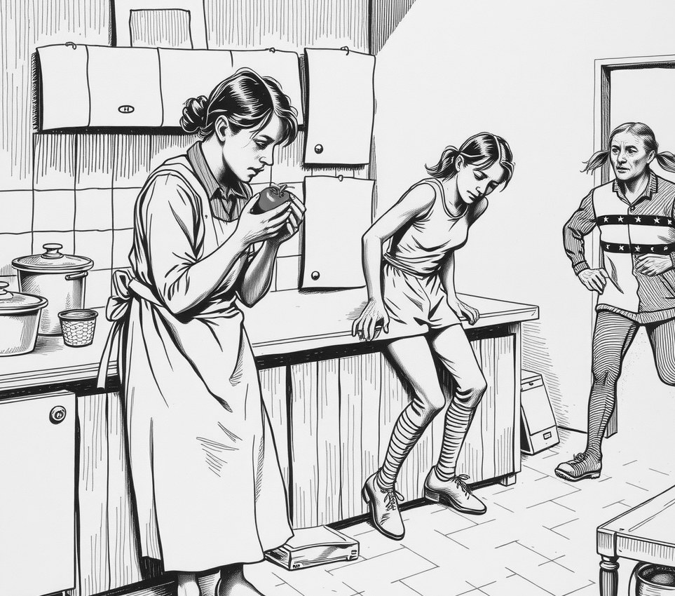

Founders' Valley . 18 April 2100

The final round of the Third Founders' Valley Cook-Off stalled for six hours on Saturday because all four finalists demanded the authentic ancestral tomato, and the only one in existence was 400 kilometres away.
The tomato lives in the Founders' Vault at Greywater Cut. Vault rules say it must be kept at Earth-normal humidity. A relay of 31 runners carried it overland in sealed hands, each breathing on it every few seconds.
Judges counted 1,140 breaths per kilometre, a figure taken from the relay's own tally sheet. The first runner left at 4.10 a.m. Two were treated for light-headedness at Dunmow Ford. A third arrived with the tomato, and an apology.
The crowd of 2,300 waited in the stands. Vendors sold out of flatbread by the second hour. Contestants were not allowed to use the local tomato, which grows in every kitchen garden in the valley and, tasters agreed, is fine.
Ebru Kiplagat won with a cold soup of the ancestral tomato, salt and nothing else. The tomato arrived at 3.52 p.m. and was sliced at 3.58.
Afterwards, Kiplagat told reporters she had tasted the local tomato the night before. "It was better," she said. "But mine had been breathed on by thirty-one people. You can't compete with that."
The tomato was returned to the Vault on Sunday. The runners have asked to be sent the long way round, so as to be breathed on less.